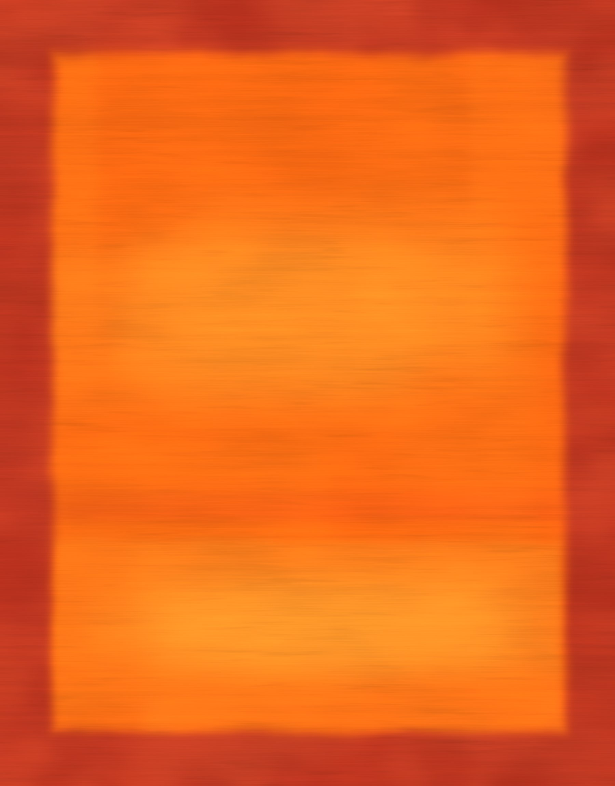
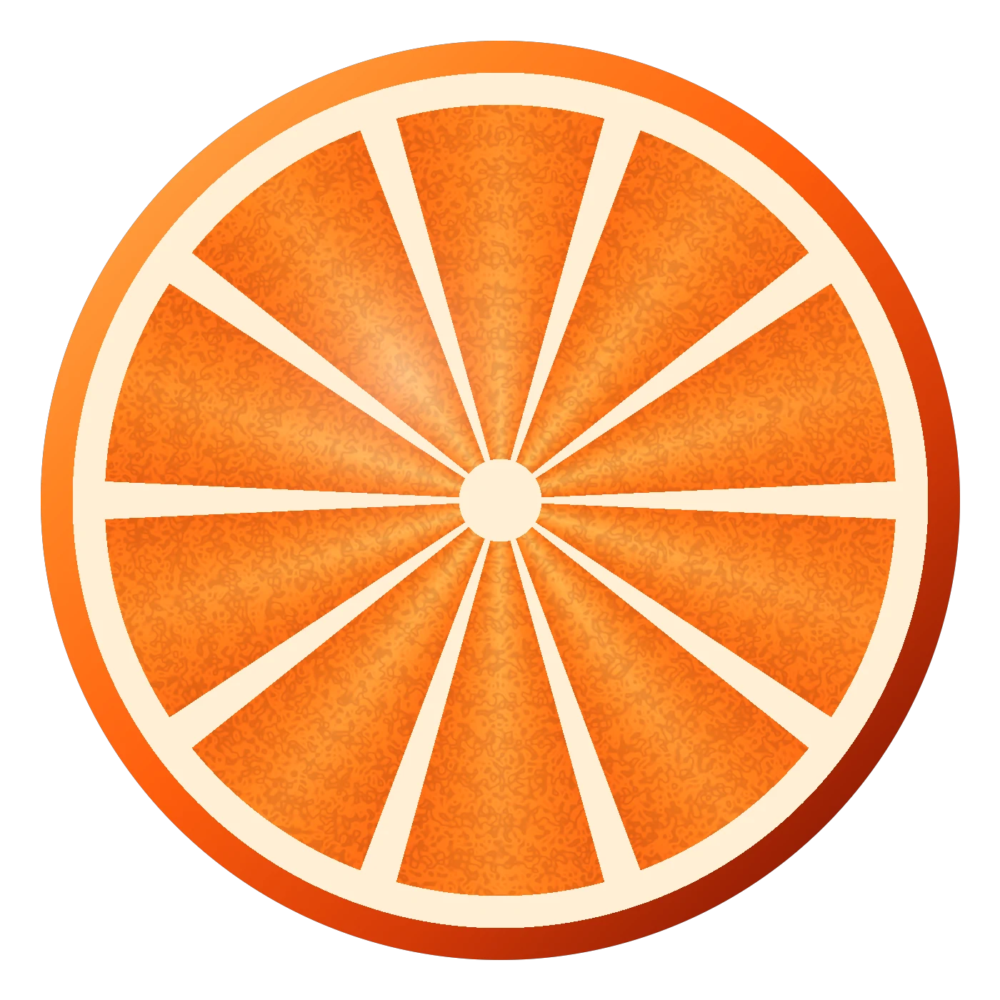
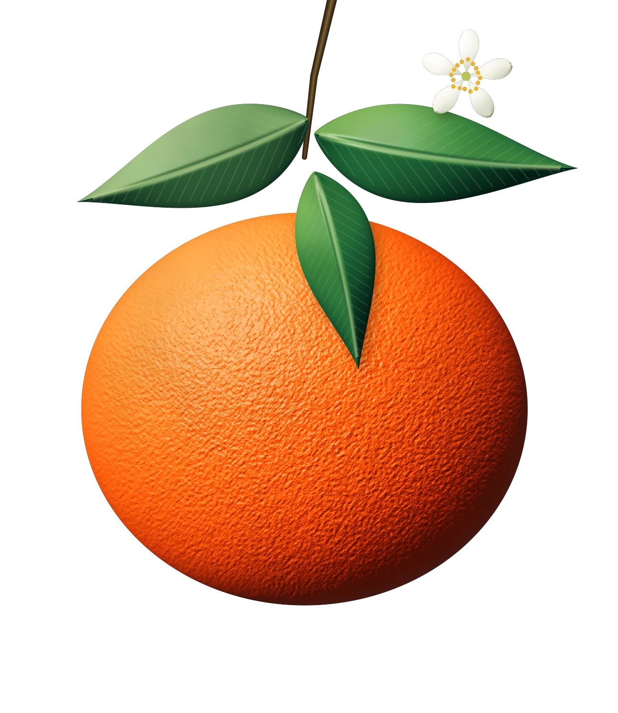

Freeman Globe
- Client
- Freeman General Contracting
- Work
- Identity motion, two films
- Year
- 2026
- Status
- Study · not yet approved by Freeman
The script holds perfectly still. Behind it, the world turns.
Two 9:16 films of one mark · 8 s loops
Georgia, USA
We build brands.
Independent creative studio
Georgia, U.S.A.




The studio
The script holds perfectly still. Behind it, the world turns.
Two 9:16 films of one mark · 8 s loops